Hi
ColorOdor
帮助盲人辨别颜色的交互装置设计
An Interactive System for The Blind to Identify Colors
组员：李帅、陈晶、李梦达、林洁
指导老师：王冠云
志愿者：两位盲人朋友
论文已被国际交互设计大会（CHI 2017）Late-Breaking Work 录用。
Group Members: Shuai Li, Jing Chen, Mengda Li, Jie Lin
Teacher: Guanyun Wang
Volunteers: Two blind but kind friends
The paper has been accepted by CHI 2017 Late-Breaking Work.
我做了什么：
- 用户调研
- 交互装置原型软硬件制作
- 原型测试
- 论文 Prototype Design 部分撰写
- 视频剪辑
What I did:
- User research
- Protype design and implementation
- Protype testing
- Paper writing (section: Prototype Design)
- Video editing
1 Concept
最开始，我们只是单纯从嗅觉为原点展开讨论。我们发现嗅觉可以带给我们很多有意思的体验，比如，我们设想气味能数字化保存，那么以后网上的照片不仅可以传递颜色信息，还可以传递气味信息，极大丰富我们的网络体验。
At the beginning, we simply got started our discussion with olfactory. We found that the sense of smell can bring us a lot of interesting experience, for instance, if odor could be digitally saved, in the future, photos could be send online not only with its color, but also its odor information.
经过几轮与老师一同的小组讨论后，我们决定将嗅觉应用在盲人社交上。盲人很难融入充满色彩的世界，尤其是与视力正常人谈论有关颜色话题的时候，我们希望通过基于嗅觉的交互，帮助盲人克服这种交流障碍。
After several rounds of discussions with the teacher, we decided to apply the sense of smell to the blind community. Many blind people find it difficult to integrate into mainstream which is a colorful world. For instance, it is difficult to communicate with reference to color between blind and sighted people. we hope to help blind people overcome this communication barrier through olfactory based interaction.

2 Rough Research
查阅文献后，我们发现大多关于盲人的人机交互论文，偏向于触觉、听觉和味觉基础上做原型。小组讨论后，我们决定尝试探索气味领域的可能性。我们用头脑风暴，发散了基于气味的交互方式给盲人带来在社交、教育方面的好处和应用。比如，通过触摸和闻带有气味的动植物模型，可以让盲人儿童更好地认识事物。
We found out most interaction design prototypes in their academic research were based on touch, hearing and tasting. After discussion, we decided to explore the posibility with odor. We used brain storming to generate many ideas about the benefits and applications in the future. For instance, children with congenital blindness can learn about animals or plants by touching and sniffing models with their odors.
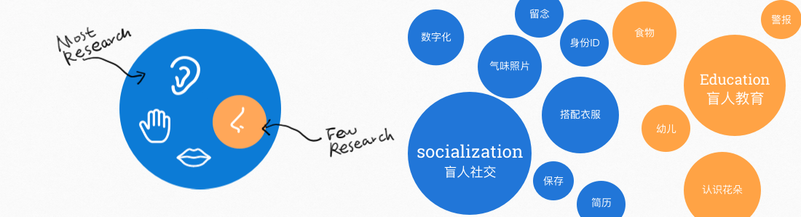3 Odor-based Coversation
解决盲人和正常人之间颜色交流障碍的关键是：找到双方一致认可的颜色-气味对应关系。
The key to solve the coversation between sighted people and visually impaired people is to find the color-odor correspondence they both agree with.
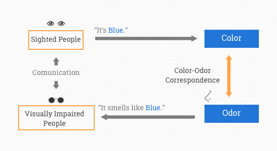4 User Research
两位盲人志愿者参与我们的用户调研，帮助我们定义七色（白色、黑色、红色、黄色、蓝色、绿色、紫色）一一对应的七种气味。（为什么是七色以及为什么选这七色论文有详细说明）。
Two blind volunteers participated in our user research to help us define the odors corresponding to seven color(white, black, red, yellow, blue, green, purple).
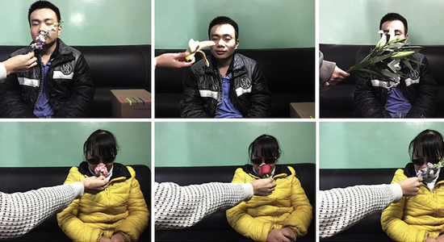5 Color-Odor Correspondence
这是最终的颜色-气味对应关系，我们会在原型设计中用到它。
This is our final color-odor correspondence database. We would use it in prototype design.
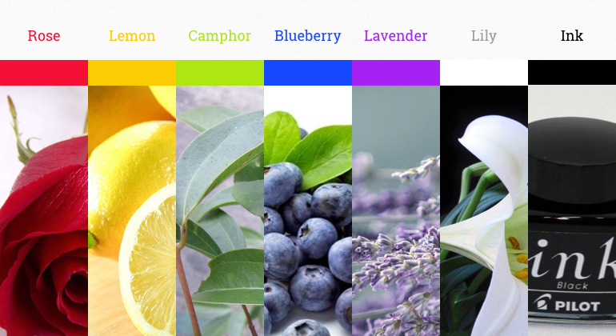6 Prototype Design
我们使用 Arduino 和 Processing 来制作原型。整个原型包含三部分：
(1) 捕获图像的摄像头，
(2) 含有颜色识别程序的笔记本电脑，
(3) Arduino 控制的超声波气体喷雾装置。
We used Arduino and Processing to make the prototype, which consists of
(1) a webcam capturing the image of seven color cards,
(2) a laptop with a color recognition program,
(3) a piezoelectric transducer system controlled by Arduino that generates scents by vaporizing liquid fragrances.
7 Feedback
其中一位志愿者帮助我们测试原型并给我们使用反馈。基本情况帮助他们准确辨识七种颜色，但是气味装置的喷出速度比较慢，颜色识别的准确性在不太好的光照条件下有待改进。
One volunteer tested the prototype and gave us feedback. However, the generation of odor is relatively slow, and the accuracy of color recognition could be improved when there is not enough light.
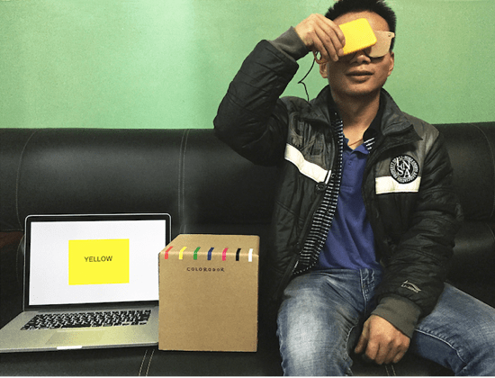8 Future Work
未来的工作，我们希望能将整个装置能集成在一些盲人产品或者可穿戴设备中。比如，盲人使用该装置挑选有色衣服。
We hope to be able to integrate the entire device into some blind products or wearable equipments. For example, blind people use this device to choose clothing colors.
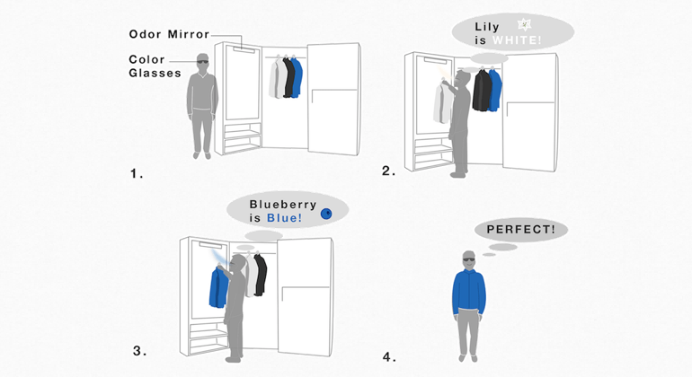Tools: 
Hi
增强现实校园社交 APP
An Augmented Reality Social APP
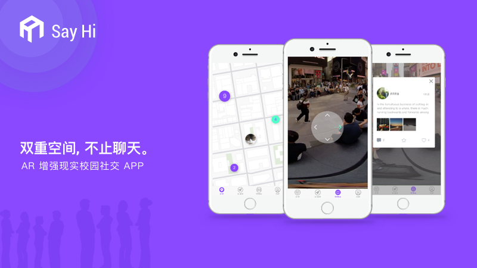
目标：设计一款新的校园社交 APP
用户：软件学院研究生
Goal: Design a new campus social app APP
Target users: Graduate students, School of Software Technology
我做了什么：
- 用户访谈
- 线框图
- 高保证原型并测试（部分功能）
- Logo 和部分界面视觉设计
What I did:
- User interview
- Wireframing
- High-fidelity prototype and testing (partly)
- Logo and partly user interface design
1 User Research
考虑到社交主题会涉及部分个人隐私，我们使用单人访谈的方式采访了 6 位研究生。
For the sake of personal privacy, we did single interview for six graduate students.
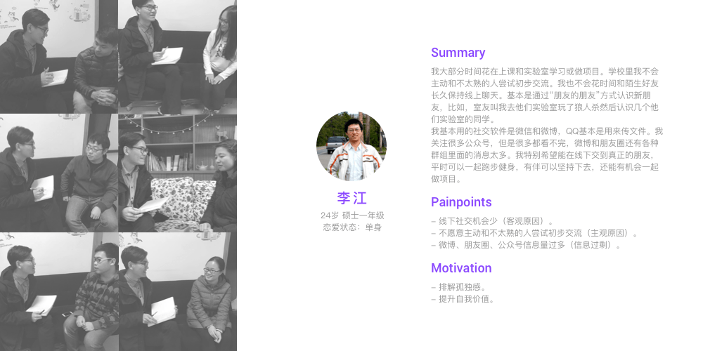
2 Concept
我们用一个“丢钥匙”的故事来表达设想的概念，用户能够在双重空间中更好地开始有意义的社交。
We used a "losting key" story to express our concept. And we do believe AR can help users start a more meaningful social life.

3 Information Architecture
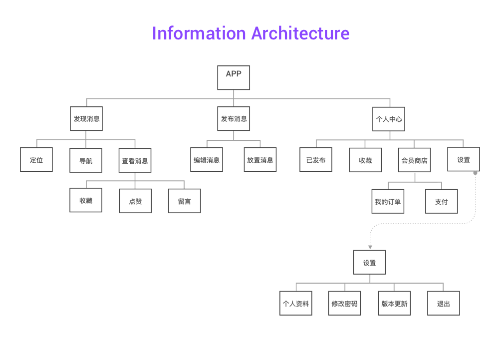
4 Low-Fidelity Prototypes
通过 A/B 测试，我们快速地筛选确定低保真方案。
Through the A/B test, we quickly chose the low fidelity prototypes.
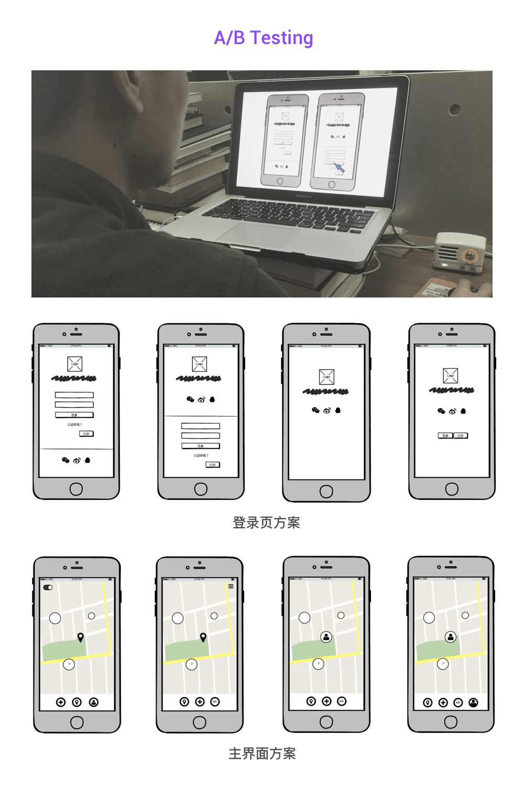5 Wireframes
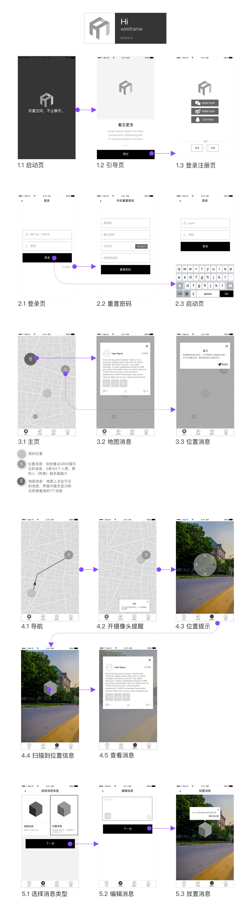
6 High-Fidelity Prototypes
通过制作部高保真原型（仅完成部分功能），我们在测试中发现了一些问题，比如：用户半路突然想终止导航去消息放置点，需要有相应的取消操作。
By making and testing high-fidelity prototypes(partly), we found some issues, for instance, the user would like to terminate the navigation to the place he chose. So we added a corresponding cancel operation.
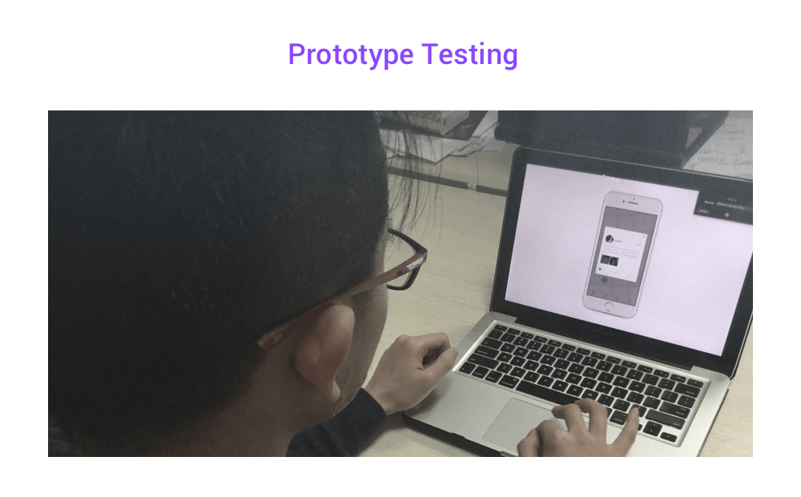7 Business Model
通过商业模式画布（Business Model Canvas），我们探索了未来可能的盈利模式。进而，在个人中心中加入了“会员商店”，提供一些特殊功能的消息类型供购买。
With the Business Model Canvas, we explored possible future profit model. In addition, we would add a "member store" in APP to provide some special features for purchase.
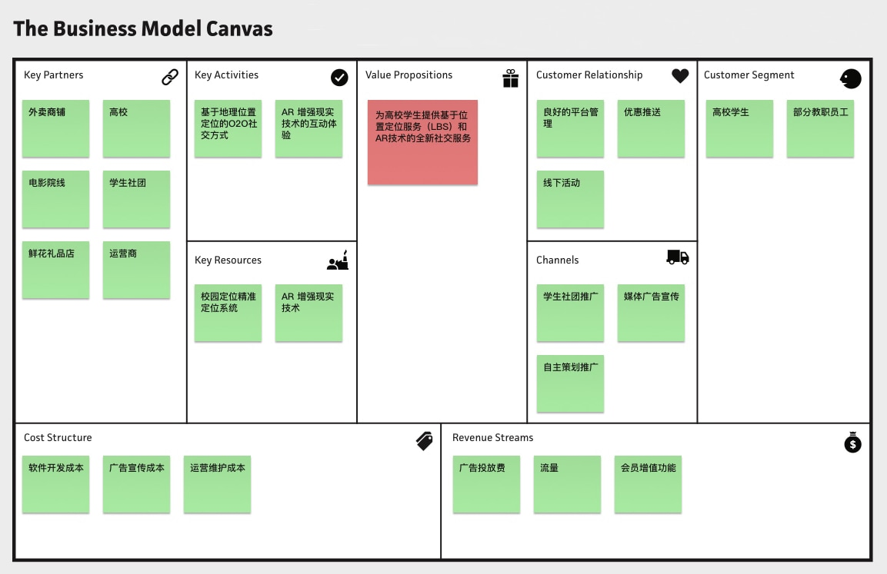Tools:
Vending Machine
机器人自助奶茶贩卖机服务设计
Milk Tea Vending Machine Service Design

1 Discover
最开始，我们实地体验了8家奶茶店，尝试宽泛地了解奶茶店服务流程。其中，我们发现了一些可供我们借鉴的点和可避免的不足。
At first, we experienced 8 milk tea shops, trying to roughly understand its service. Moreover, we found some points for us to learn and avoid.
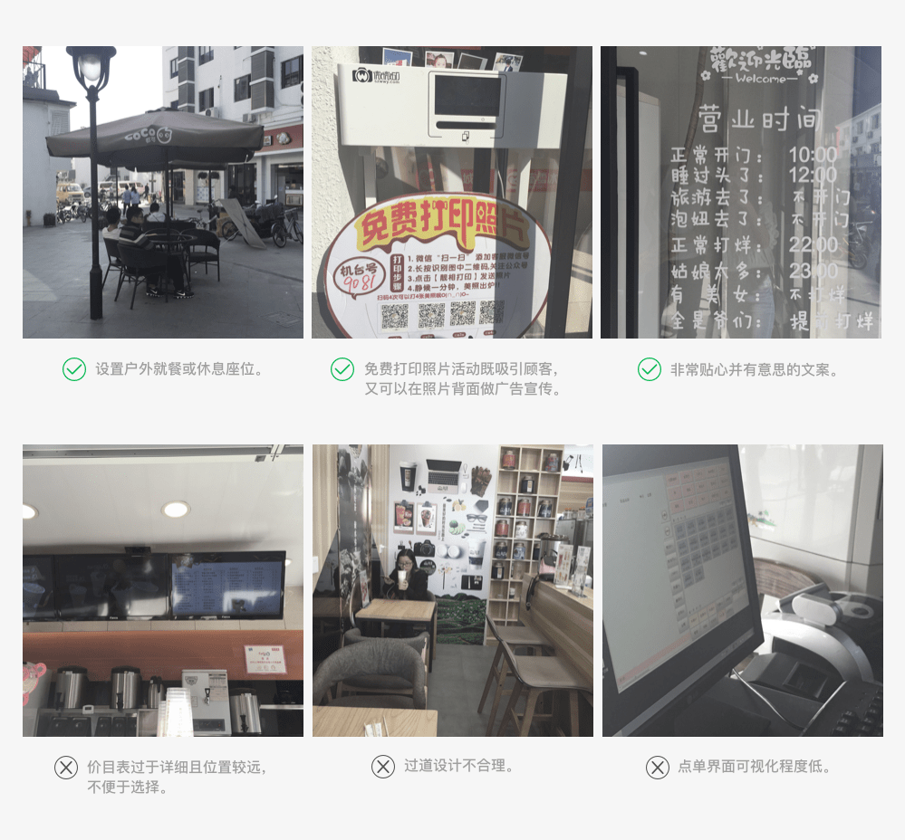特别地，我们对“一点点”奶茶店进行了用户人群分析和购物流程梳理。因为“一点点”是我们调研的奶茶店中消费人群流量最大且口碑最好的。
In particular, we did user population analysis of "一点点" milk tea shop and its shopping process. Because "一点点" has the largest consumer population and the reputation of best brand among the 8 shops.
 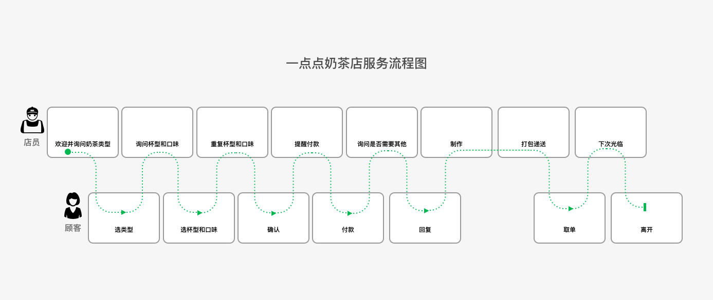
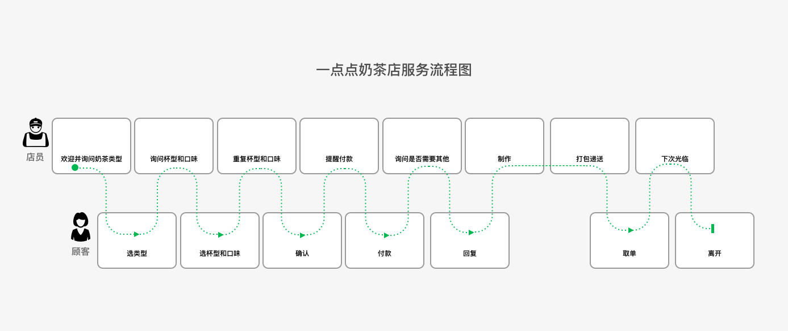
我们从目标人群、购物流程、店铺装修和店铺位置 4 个方面总结了调研结果。
We summarized the results from 4 aspects: target users, shopping process, furniture design and store location.
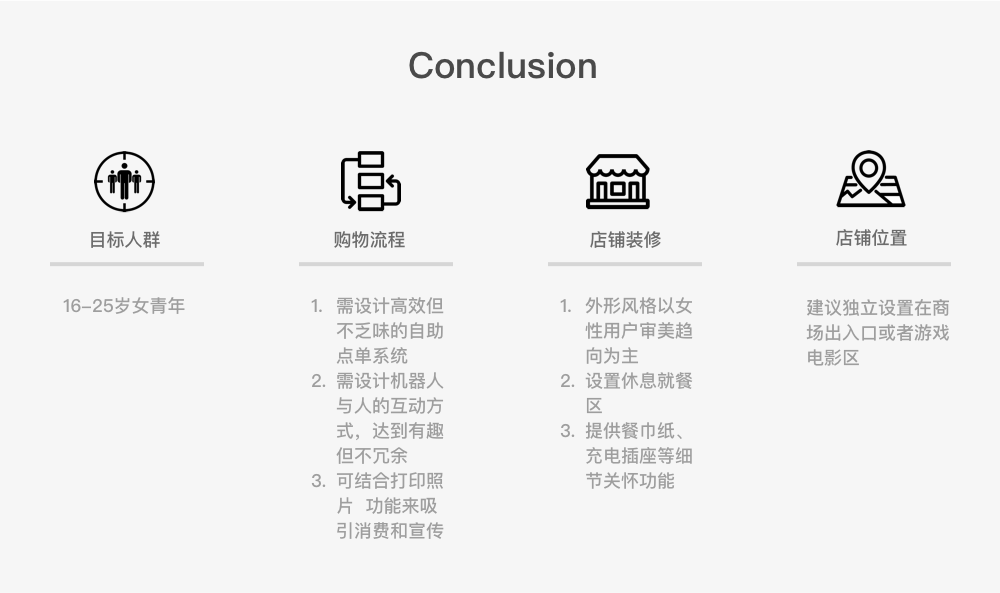2 Define
通过实地调研之后，我们讨论并确定了 2 个设计任务：
1. 机器人（代替店员）服务过程。
2. 自助点单系统的设计。
After research, we did group discussion and identified 2 design tasks:
1. Design a robot's (instead of clerk) service process.
2. Design a self ordering system.
3 Develop
我们首先解决第二个设计任务：自助点单系统设计。因为自助点单系统是机器人服务过程中点单的部分。走访了几家大型购物中心，我们发现麦当劳的自助点单系统是相对最完善的。
First, we tried to solve the second design task: Design self ordering system. Because it was part of the service design. After searching around several large shopping centers, we found that McDonald's self ordering system was relatively perfect.
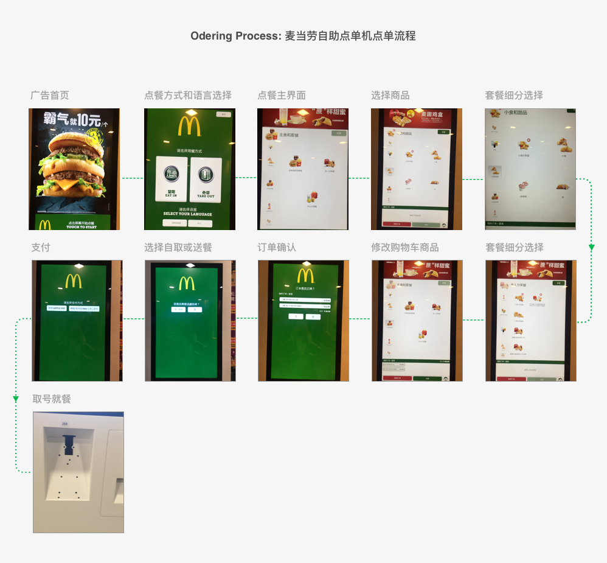 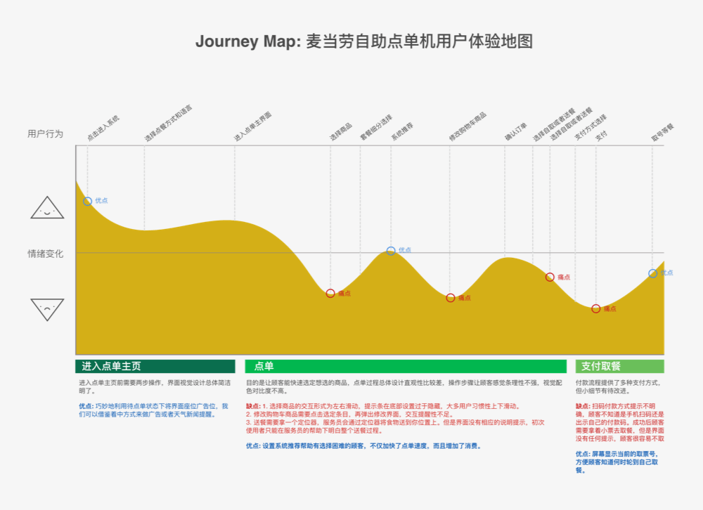小组讨论和方案探索
Group discussion and exploration.
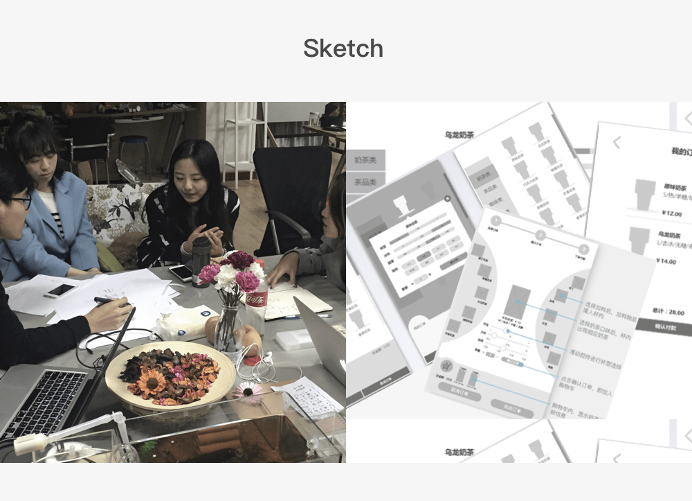4 Deliver
自助点单系统： 基于直观易操作（缩短点单时间）和有趣味性（提高情感体验）考虑，我们设计了插画风的点单界面。
Self odering system: we designed an illustration Style interface to help customers oder and enrich their experience.
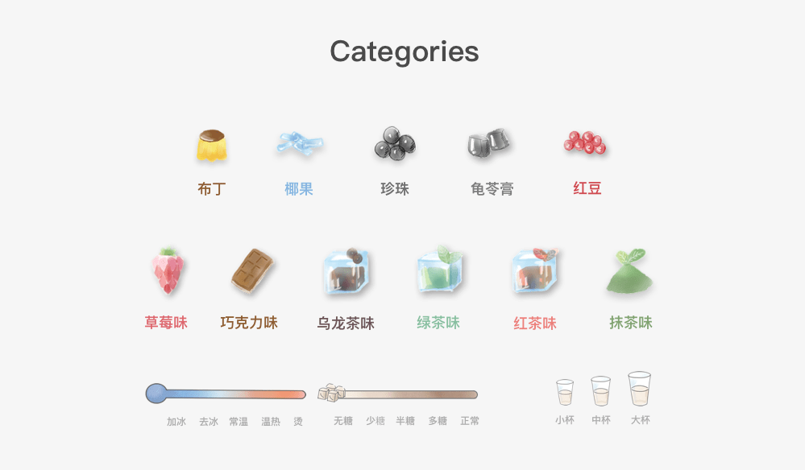 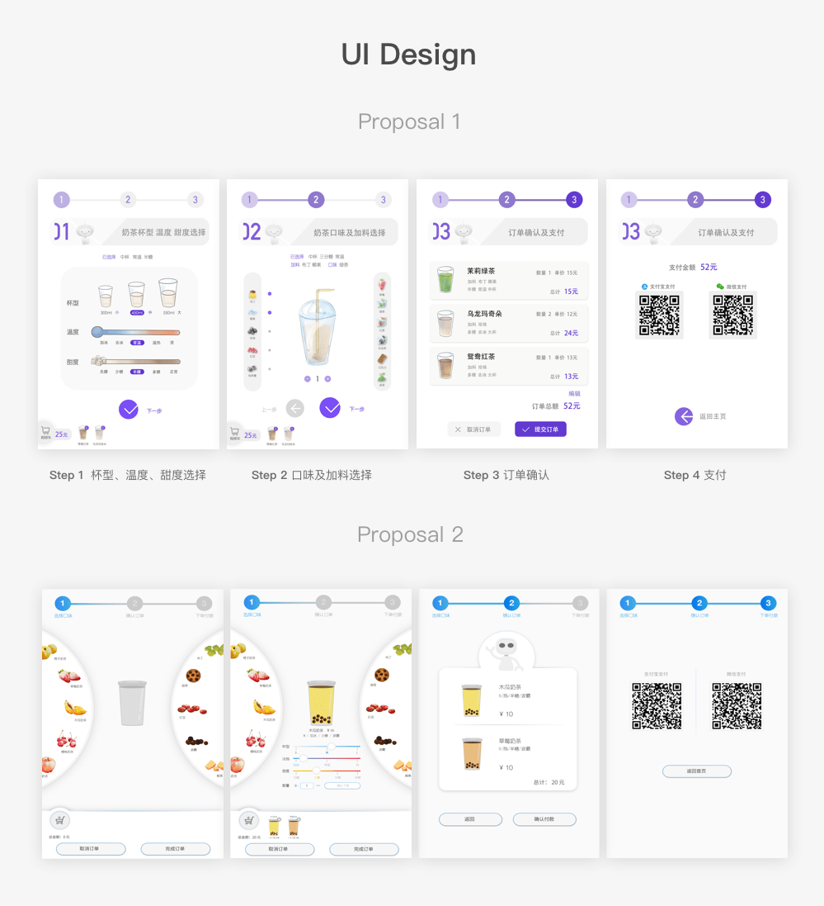
我们希望机器人与人的整个服务过程中的交互能做到 “3A” ：
1. 服务前有消费吸引力 (Attract) 。
2. 服务中不无聊，沉浸式体验 (Addict) 。
3. 服务后能给顾客留下深刻印象 (Affect) 。
Our goals for the robot's service is:
1. Attract (Before service).
2. Addict (During service).
3. Affect (After service).
Logo Design
罗氏诊断客户关怀部门 Logo 设计
Design a logo for Customer Care Dept, Roche Inc
Web Design
办事大厅网站改版设计
Service Hall Website Redesign
个人作品集网站
Personal Portfolio Website
CEstudio
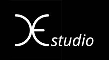
我们是 CEstudio（Chen Jing & Edem）！
We Are CEstudio!
2016 年参加第一次 We+ 联合艺术展，在杭州西溪商业街。我们可以为您拍照、画肖像画、丙烯画和油画。
We had our first exhibition in Hangzhou, 2016. We can take pictures and make art works for you.
项目 Projects
日光之下，并无新事。所以，学着像个艺术家那样“偷”。
There is nothing new under the sun. So Steal Like An Artist.
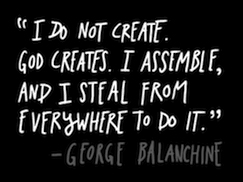
关于 About
“Art challenges technology, technology inspires art.” - John Lasseter
我是一名信息产品设计专业学生，喜欢把设计和技术结合。有视觉设计、交互设计和产品设计的经历，可用 HTML、CSS、Processing 编写小程序；喜欢看书，空闲会去打球或弹吉他。
I am an information product design student. Having experience in Visual Design, Interaction Design and Product Design. I know how to code with HTML, CSS, Processing. Moreover, I like reading. I play basketball and guitar to kill time.
Chen Jing
经历 Experiences
"把生命当作一次经历。" – Tibor Kalman
"Everything is an experiment."
– Tibor Kalman
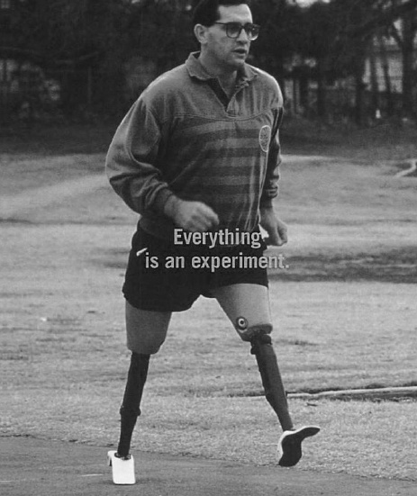
-
Office Assistant
办公室助理
11/2014 - 06/2015
@Global Development Research Institution Zhejiang 全球浙商发展研究院
协助第 22 届全球金融年会会议筹备，发布并更新会议网站和微信内容。搜集整理企业相关数据、访谈内容。
Participated in preparation of The 22nd Annual Global Finance Conference. Published and updated news on the conference website and Wechat. Learnt to collect data for research.
-
Visual Design Intern
视觉设计实习生
11/2015 - 01/2016
@DXY Inc 丁香园
在商业视觉设计组，主要做网站 Banner 和 Logo 设计。从中学到了如何和客户交流以及公司内部分享会展示。
Responsible for Visual Design Group. Designed Banner and Logo. Learnt to communicate with customers and do sharing speech.
-
UI Design Intern
UI 设计实习生
03/2016 - 06/2016
Moyan Inc 墨研科技
在 UI 设计小组，学习 APP 和网站界面设计。参与了如纽乐科技电动牙刷 APP 、企业学校子网站改版等相关项目。
Responsible for UI Design Group. Learnt to do APP and web user interface design.
-
Member of UxRen Translate Community
UxRen 翻译组成员
-
Volunteer
志愿者
2015 GFC
2016 WIDC
2016 Smart City Expo China
第 22 届全球金融年会志愿者。
The 22nd Annual Global Finance Conference, Hangzhou.
2016 世界工业设计大会志愿者。
World Industrial Design Conference 2016, Hangzhou.
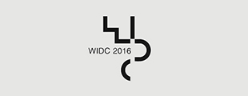第六届智慧城市中国博览会志愿者。
The Smart City Expo China 2016, Ningbo.
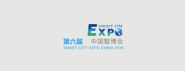
联系 Contact
很期待您的来信。
I am happy to hear from you.